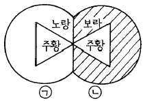
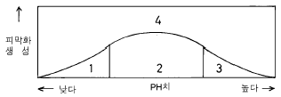
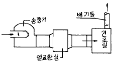

금속도장기능사 (2004-02-01 기출문제)
1과목: 색채
1. 색료혼합의 결과는?
- 명도는 낮아지고 채도는 높아진다.
- 명도는 높아지고 채도는 낮아진다.
- 명도와 채도 모두 낮아진다.
- 명도와 채도 모두 높아진다.
(정답률: 알수없음)

2. 다음 색 중 안정, 평화, 지성의 상징적인 색은?
- 녹색
- 청록
- 파랑
- 보라
(정답률: 알수없음)
3. 채도에 대한 설명 중 틀린 것은?
- 유채색과 무채색 모두 채도가 있다.
- 같은 색상 중에서 채도가 가장 높은 색을 순색이라 한다.
- 먼셀표색계에서 채도는 /0, /1, /2,· · · /14와 같이 나타낸다.
- 무채색의 함량이 많은 색상 일수록 채도가 낮다.
(정답률: 알수없음)
4. 빨강과 파랑색광의 혼합색광과 가장 가까운 색은?
- 마젠타색
- 초록색
- 바다색
- 검정색
(정답률: 알수없음)
5. 먼셀(Munsell)의 기본적인 명도 단계는?
- 5
- 10
- 11
- 14
(정답률: 알수없음)
6. 보기의 그림은 똑같은 주황색이 ㉠쪽에서는 실제보다 어둡게 보이고 ㉡쪽에서는 밝게 보이는 것은 주로 어떤 대비 현상 때문인가?

- 색상대비 현상
- 보색대비 현상
- 명도대비 현상
- 계시대비 현상
(정답률: 알수없음)
7. 두색 사이의 대비현상이 동시에 일어날 경우 다음 중 가장 강하게 나타나는 대비 현상은?
- 채도대비
- 명도대비
- 색상대비
- 한난대비
(정답률: 알수없음)
8. 다음 중에서 가볍고 크게 보이려면 어떠한 색 포장지를 사용하는 것이 가장 좋겠는가?
- 녹색의 순색 포장지
- 보라색 포장지
- 귤색의 밝고 맑은색 포장지
- 검정과 회색문양이 있는 포장지
(정답률: 알수없음)
9. 다음 중 배색의 설명으로 옳지 못한 것은?
- 색상, 명도를 같게 하면 온화한 느낌이다.
- 명도가 높은 색을 주로하면 밝고 경쾌하다.
- 채도가 높은 색을 주로하면 화려하고 자극적이다.
- 색상을 난색계로 하면 서늘하고, 한색계로 하면 따뜻한 느낌이다.
(정답률: 알수없음)
10. 유사색상의 배색은?
- 활동적이며 대조적인 느낌
- 우아한 느낌으로 자주와 남색, 녹색과 노랑
- 강하고 서늘하며 정적이고 대비적인 느낌
- 어둡고 무거운 느낌
(정답률: 알수없음)
11. 명도가 높은 색부터 낮은 색 순으로 되어 있는 것은?
- 노랑 - 청록 - 다홍 - 연두
- 노랑 - 연두 - 파랑 - 다홍
- 노랑 - 귤색 - 다홍 - 청록
- 노랑 - 주황 - 빨강 - 다홍
(정답률: 알수없음)
12. 먼셀(Munsell)의 주요 5원색은?
- 빨강, 노랑, 녹색, 파랑, 보라
- 빨강, 주황, 녹색, 남색, 보라
- 빨강, 노랑, 청록, 남색, 자주
- 빨강, 주황, 녹색, 파랑, 자주
(정답률: 90%)
13. Al, Zn, Cu, Cr, Ni, Sn, Mg 등 금속 위에 부착성을 좋게 하기 위해서 칠하는 도료는?
- 워시 프라이머(wash primer)
- 래커 프라이머(lacquer primer)
- 오일 프라이머(oil primer)
- 징크리치 프라이머(zinc rich primer)
(정답률: 알수없음)
14. 연마재 중 각이 져 있어 표면을 후벼내며 블라스트의 효율을 좋게 하는 것은?
- 세미 샤프(SEMI SHARP)
- 그리트(GRIT)
- 쇼트(SHOT)
- 모래(SAND)
(정답률: 알수없음)
15. 도료 속에 적은 양을 가하여 도료의 성상을 조정하는 성분은?
- 안료
- 중합제
- 용제
- 첨가제
(정답률: 73%)
16. 오일프라이머의 설명 중 틀린 것은?
- 건조성이 뛰어나다.
- 부착성이 우수하다.
- 가격이 싸다.
- 내후성이 양호하다.
(정답률: 알수없음)
17. 철판에 도장을 할 경우, 전처리 공정에서 염산이나 황산을 사용하여 녹을 제거한다. 이 때 억제제(inhibitors)를 사용하는 가장 큰 목적은?
- 녹제거를 원활하게 하기 위해서
- 철과 염산이나 황산의 반응을 좋게하기 위해서
- 염산이나 황산의 유동성을 좋게하기 위해서
- 철 바탕에 스마트(smut), 핏트(pit)를 방지하기 위해서
(정답률: 80%)
18. 도료의 무게가 무겁고 독성이 있으며 피도면에 흐르기 쉬운 결점을 가진 도료는?
- 경금속 도료
- 연단 도료
- 내화 도료
- 에칭 프라이머
(정답률: 80%)
19. 다음 수지 중 합성수지가 아닌 것은?
- 페놀수지
- 프탈산수지
- 셀락수지
- 에폭시수지
(정답률: 알수없음)
20. 120 - 150℃에서 20-30분 가열해야 도막이 형성되는 페인트는?
- 초산비닐수지 페인트
- 멜라민수지 페인트
- 염화고무 페인트
- 비닐수지 페인트
(정답률: 알수없음)
2과목: 금속도장재료
21. 알루미늄 전처리중 산성크로메이트 처리액의 pH와 피막화 생성의 그래프 중 적정 피막형성 구간은?

- 1
- 2
- 3
- 4
(정답률: 64%)
22. 프라이머를 수지종류별로 분류한 것 중 옳지 않은 것은?
- 래커계
- 오일계
- 합성수지계
- 중합계
(정답률: 알수없음)
23. 다음의 유지 중 건성유에 해당하는 것은?
- 피마자유
- 아마인유
- 올리브유
- 면실유
(정답률: 알수없음)
24. 상도도료 중 내열성이 가장 우수한 것은?
- 아크릴수지도료
- 에폭시수지도료
- 실리콘수지도료
- 우레탄수지도료
(정답률: 알수없음)
25. 광택제의 조건과 관계 없는 것은?
- 불순물에 예민할 것
- 평활성이 클 것
- 전류밀도의 범위가 넓을 것
- 물체에 균일 광택이 이루어질 것
(정답률: 알수없음)
26. 비철금속의 성질 및 산세에 대한 설명 중 옳지 않은 것은?
- 알루미늄은 녹이 슬지 않는 금속이다.
- 동합금 산세는 10∼40% 황산 수용액을 사용한다.
- 알루미늄 합금 산세는 10% 황산 수용액을 사용한다.
- 마그네슘 합금 산세는 18% 크롬산 수용액을 사용한다
(정답률: 알수없음)
27. 용제에 대한 설명 중 옳지 않은 것은?
- 비점이 150℃이상인 것을 고비점 용제라 한다.
- 비점이 100℃이하인 것을 저비점 용제라 한다.
- 진용제는 단독으로 수지류 용해가 어렵다.
- 비점이 100∼150℃ 인 것을 중비점 용제라 한다.
(정답률: 알수없음)
28. 선저 도료 2호에 대한 설명 중 잘못된 것은?
- 해중 생물이 부착하는 것을 방지하기 위해서 사용한다.
- 방오제를 가한 도료이다.
- 바인더는 유성계, 염화고무계, 비닐계가 일반적이다.
- 방청을 위하여 사용한다.
(정답률: 50%)
29. 금속 중 가장 가볍고 비중이 1.7로서 알루미늄과의 합금으로 인장강도가 높은 합금은?
- 주석. 납. 아연과 그 합금
- 구리 아연 합금
- 마그네슘 합금
- 알루미늄과 그 합금
(정답률: 알수없음)
30. 일반적으로 산세의 속도가 가장 빠른 산의 종류는?
- 염산
- 황산
- 인산
- 질산
(정답률: 알수없음)
31. 인산염 피막 처리시 발생하는 기체는?
- O2
- H2
- PO4
- Cl2
(정답률: 80%)
32. 피처리물은 표면조정 및 화성처리의 상태에 따라 도막의 상대적 효율이 달라진다. 동일 도장계로 도장한 후 폭로 시험한 결과 상대적 방청성이 가장 좋은 방법은?
- 산처리
- 산처리후 인산염 처리
- 샌드 블라스트
- 화염세정 3회
(정답률: 90%)
33. 다음 탈지(脫脂)에 관한 설명 중 잘못된 것은?
- 용제의 기름 용해력을 이용한다.
- 용제와 계면활성제를 배합한 에멀션 상태의 것을 사용한다.
- 탄산칼슘을 수용성 물질에 분산시켜 사용한다.
- 알칼리를 주재료로 하여 사용한다.
(정답률: 알수없음)
34. 페인트 도장에서 바탕 조정이 끝난후 바로 이어서 행하는 작업은?
- 방청 작업
- 퍼티 작업
- 중도 작업
- 상도 작업
(정답률: 알수없음)
35. 나무주걱에 대한 설명 중 잘못된 것은?
- 작은 요철이나 사포자국을 없애는데 적합하다.
- 주걱 끝이 잘 갈라질 수 있도록 유연해야 한다.
- 장시간 용제나 물에 견딜 수 있어야 한다.
- 허리가 적당히 휘어져야 한다.
(정답률: 알수없음)
36. 다음 도면의 열풍건조로 방식은?

- 간접 비순환식
- 직접 비순환식
- 간접 순환식
- 직접 순환식
(정답률: 46%)
37. 적외선 가열로에서 전압조정기를 설치하는 목적은?
- 변색 방지
- 오렌지필 방지
- 크레터링 방지
- 블리스터 방지
(정답률: 50%)
38. 적외선로의 특징과 관계가 없는 것은?
- 가열면에 온도 상승이 빠르다.
- 열풍 건조로에 비해 예열시간이 적다.
- 설비면적이 다른 로에 비해 적다.
- 건조로 중 설비비가 가장 많이 소요된다.
(정답률: 알수없음)
39. 붓의 올바른 길들이기 방법은?
- 하도에서 부터 길을 들여 점차 상도용으로 한다.
- 상도용에서 부터 길을 들여 점차 하도용으로 한다.
- 하도와 상도를 번갈아 가며 길을 들인다.
- 반드시 하도용과 상도용을 구분하여 길을 들여야만 한다.
(정답률: 64%)
40. 주걱에 대한 설명 중 틀린 것은?
- 철제주걱은 끝을 숫돌에 갈아 약간 둥글게 한다.
- 고무주걱은 유기용제와 친화성이 좋은 것으로 사용한다.
- 나무주걱은 중심을 정점으로 칼 모양의 것을 사용하기도 한다.
- 합성수지판 주걱도 사용한다.
(정답률: 28%)
3과목: 금속도장
41. 정전도장 장치에 대한 설명으로 틀린 것은?
- 직류 고전압을 사용하여 전기적 도장을 한다.
- 수중 뿜칠 정전 도장 장치의 고압 스위치는 건을 쥔 상태로 on, off를 한다.
- 도료의 점도를 조정해도 모든 도료를 다 도장 할 수 있는 것은 아니다.
- 에어레스 스프레이에 비해 도착 효과가 대단히 낮다.
(정답률: 알수없음)
42. 전착 도장시 피도체의 통전 시간은 어느 정도가 가장 적합한가?
- 10분
- 8분
- 2.5∼3분
- 0.5분
(정답률: 84%)
43. 다음 도장 기기 중 높은 점도로 도장할 수 있는 기기는?
- 중력식 에어 스프레이 장치
- 압송식 에어 스프레이 장치
- 정전 도장기
- 에어레스 스프레이 장치
(정답률: 알수없음)
44. 다음 중 알칼리 탈지법의 장점이라고 볼 수 없는 것은?
- 탈지 효과가 우수하다.
- 폐수처리가 불필요하다.
- 비용이 적게 든다.
- 대량처리에도 적용이 가능하다.
(정답률: 알수없음)
45. 도막에 좁쌀 또는 콩알 크기 만한 오목골로 움푹 들어간 결함의 발생과 관계 없는 것은?
- 표면 장력이 높은 도료를 사용 하였다.
- 피도면에 기름이 묻었다.
- 유동성이 나쁜 도료를 사용 하였다.
- 온도가 낮은 곳에서 도장 하였다.
(정답률: 알수없음)
46. 오일 프라이머를 도포하고 1시간 건조시키고 나서 래커도료를 도포하였더니 결함이 발생하였다. 다음 중 어느 결함인가?
- 핀홀
- 번짐
- 오렌지필
- 블리스터
(정답률: 80%)
47. 다음 용제 중 폭발하한 농도가(Vol%) 가장 낮은 용제는?
- 톨루엔(Toluene)
- 키시렌(Xylene)
- 아세톤(Acetone)
- 이소프로필알콜(IPA)
(정답률: 30%)
48. 다음은 정전도장기에 관한 사항이다. 가장 관계가 먼 것은?
- 수동정전 도장을 할 때 무진, 무정전 복지로된 옷(부스 복:Booth용 옷)을 입는다.
- 수동 정전도장시 도료가 작업자에게 되돌아오는 경우도 있다.
- 정전도장기를 사용하는 부스(Booth)는 에어도장(Air Spray)보다 환기 풍속을 높게 한다.
- 정전도장은 어스(Earth)를 하지 않으면 정전 효과가 기대보다 낮다.
(정답률: 알수없음)
49. 도장 중독의 예방과 관계 깊은 기기 및 설비는?
- 진공청소기
- 부스
- 샌더 수연(水硏)
- 방폭등
(정답률: 알수없음)
50. 샌드블라스트(sand blast)에 대하여 특히 유의해야 할 점은?
- 규폐 및 진폐
- 화상
- 정전기
- 감전
(정답률: 알수없음)
51. 스프레이 건의 형식이 아닌 것은?
- 중력식
- 흡상식
- 왕복식
- 압송식
(정답률: 알수없음)
52. 압송식 스프레이 건(spray gun)으로 도장 작업시에 공기압력이 너무 낮으면 어떠한 현상이 일어나는가?
- 분무가 거칠고 도료의 낭비가 많다.
- 분무가 거칠고 공기의 낭비가 많다.
- 분무는 미세하나 도료 낭비가 많다.
- 분무는 미세하나 공기 낭비가 많다.
(정답률: 75%)
53. 붓도장의 장점을 설명한 것 중 옳은 것은?
- 속건성 도료의 도장이 쉽다.
- 피도물을 임의로 골고루 도장이 가능하다.
- 균일한 도막을 얻을 수 있다.
- 인력과 시간적인면에서 능률적이다.
(정답률: 알수없음)
54. 안료가 든 도료의 원액을 측정하는 점도 시험기는?
- 낙구식점도계
- 포드컵
- 투언컵
- 스토머점도계
(정답률: 80%)
55. 철강재 바늘로 도막에 나선형의 절단상처를 내고, 나선으로 둘러싼 부분의 박리상태를 시험하는 방법은?
- 묘화시험기
- 바둑판시험기
- 에릭센시험기
- 굴곡시험기
(정답률: 알수없음)
56. 다음은 도료의 건조 방법 중에서 자연 건조에 대한 설명이다. 틀린 것은?
- 자연 건조의 표준 조건은 온도 20± 3℃, 습도 75% 정도이다.
- 자연 건조는 대기 중에 방치하여 시설이나 건조 비용 등이 필요하지 않다.
- 자연 건조는 통풍을 차단할 수 있는 곳에서 비교적 기온이 높고 습도가 적을수록 좋다.
- 자연 건조의 최적 조건은 온도 10℃이상, 습도 80%이하이다.
(정답률: 알수없음)
57. 도료 저장 중에 일어나는 결함으로 초기의 색이 다른 색으로 변화되는 현상에 대한 원인으로 가장 적당한 것은?
- 용해력이 없는 용제를 사용하였을 때
- 고온에서 보관할 경우
- 안료 상호간의 작용
- 다른 종류의 도료를 혼합했을 때
(정답률: 알수없음)
58. 에어레스 스프레이(airless spray) 작업시 도료의 종류에 따라 텔(tail)현상이 발생한다. 텔(tail)현상의 방지책이 아닌 것은?
- 점도를 낮춘다.
- 패턴 크기를 줄인다.
- 근 거리에서 스프레이 한다.
- 팁 구경을 큰 것을 사용한다.
(정답률: 알수없음)
59. 안전사고가 발생하는 인적요인에서 생리적인 원인이 아닌 것은?
- 감정
- 극도의 피로감
- 음주로 인해서 발생되는 재해
- 수면부족으로 인해서 생기는 재해
(정답률: 알수없음)
60. 도장 작업시 연마를 행하는 이유가 아닌 것은?
- 이물질 제거를 위하여
- 외관 향상을 위하여
- 도료의 소모량을 줄이기 위하여
- 표면적을 넓게 해줘서 부착력을 향상시키기 위해
(정답률: 73%)